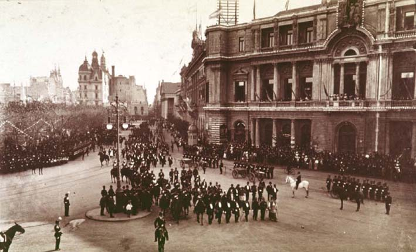

|
Independence
|
|  |
| Alejandro Witcomb, 25 de Mayo |
Celebrations of Independence, which had been an occasion for popular fairs and amusement in the city of Buenos Aires dureing most of the nineteenth century, assumed a more formal and ceremonial nature in the 1880s and 1890s, following the consolidation of the central state in 1880. Public festivities on Independence Day (May 25th) were organised and designed directly by the state after 1881 (the first 'season' after Julio A. Roca´s ascension to presidential office), leading to a militarisation of the event. A solemn, martial tone, and military parades replaced the games and bonfires (that continued to be held in many barrios and suburbs) from centre stage: the Plazas 25 de Mayo and de la Victoria. The chronicler of La Tribuna Nacional ("¡Adiós Patria!"; 26 May 1883) nostalgically acknowledged the change:
Se acabaron las rosquitas de maíz, el dulce de batata, el arroz con leche, los negros y las negras. Felipón (el payaso, "¡Dios, luz suprema de las fiestas populares!") y sus compinches, los cohetes voladores y los buscapiés, los palos enjabonados, los rompecabezas y las calesitas gratis; ya no hay nada de aquel 25 de Mayo antiguo, que llevaba a la plaza diez mil concurrentes por día rebosando según los gustos de entonces, de alegría y de felicidad popular [...] ¡No se habla más que de dinero, de ferrocarriles, de indios suprimidos, de empréstitos, de progresos, de bancos, de gobierno, de paz y administración! ¡Ni siquiera un barullito!
The seizure of the popular feast by the state produced an immediate decline of public interest, even though in 1884 a rise in attendance was noted due to the simultaneous inauguration of the new Plaza de Mayo (after the demolition of the colonial arches separating the two squares). By contrast to this 'alarming' descent of national commemorations into solemn yet vacuous and little-attended parades and speeches, the national celebrations of the immigrant communities (especially the Spanish and Italians) attracted large crowds, to the concern of Creole elite politicians. Schools were targeted to raise public participation, particularly through the formation of 'batallones infantiles', or 'childrens´ battalions' (five in total, like the military divisions that had participated in the 'Conquest of the Desert' of 1879), who would be dressed up in military uniforms and trained in marching techniques by army officers.